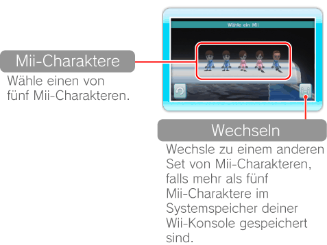
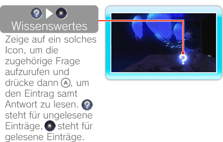

14 |
Mit einem Mii schwimmen |
 |
|
Zeige auf dem Aquariumsbildschirm auf
 , um ein Mii auszuwählen, das im Systemspeicher deiner Wii-Konsole gespeichert ist. , um ein Mii auszuwählen, das im Systemspeicher deiner Wii-Konsole gespeichert ist.Hinweis: Mii-Charaktere kannst du im Mii-Kanal erstellen. Weitere Informationen zur Erstellung von Mii-Charakteren findest du in der Bedienungsanleitung der Wii-Konsole – Kanäle und Einstellungen, „Mii™-Kanal”.

Zeige auf ein Mii und drücke
. Es kann sein, dass die Auswahl auch automatisch erstellte Mii-Charaktere enthält.
Nachdem du ein Mii ausgewählt hast, kannst du ihm beim Schwimmen zusehen. Dein Mii kann auch die Fische füttern oder nach wissenswerten Fakten suchen.

Hinweis: Mii-Charaktere folgen einem festgelegten Weg und können nicht vom Spieler gesteuert werden.
|
 , um weiter-
zuschwimmen.
, um weiter-
zuschwimmen. |
 |
 |